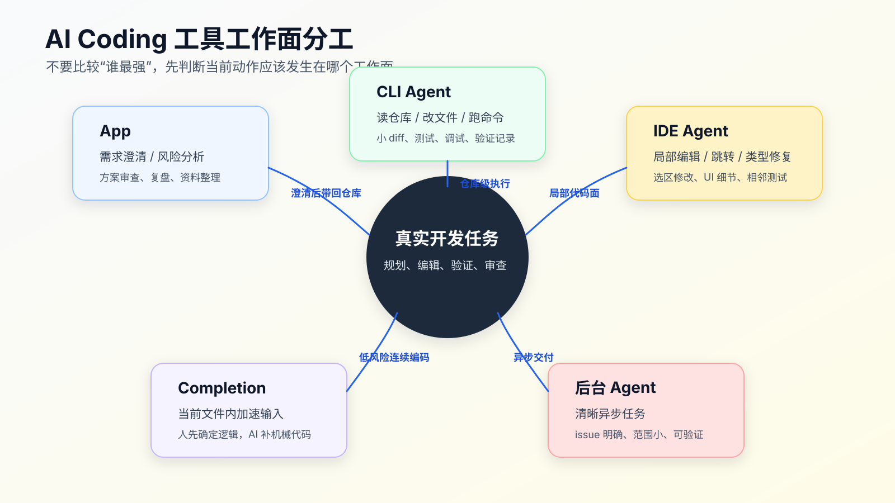

Codex、Claude Code、Cursor、Copilot 怎么分工
程序员不需要每天换一个 AI Coding 工具。
真正要解决的问题是：一个真实需求先在哪个工作面推进，什么时候才有必要切到另一个工具。
工具选错，AI 能力再强也会难用。
很多人的 AI Coding 工作流卡在一个误区：把 Codex、Claude Code、Cursor、Copilot 当成同一类工具比较。于是问题变成“哪个更强”。这个问题太粗。
先按真实开发动作看边界，不要先按工具名排座次：
- App 类工作面：适合聊需求、拆任务、看结果、管长任务、做文件预览、异步审查和材料整理。
- CLI 类工作面：适合把 Agent 放进真实仓库，读文件、改文件、跑命令、留下可复查输出。
- IDE / AI 编辑器工作面：适合贴近代码上下文做阅读、跳转、diff 审查、断点 debug、局部编辑和交互式修改。
- 补全：适合当前文件内的低风险连续编码。
- 后台 Agent：适合清楚、范围小、可验证、可以异步处理的任务。
App 和 CLI 不是两套能力。只要 CLI Agent 能读仓库、调用工具、运行命令，规划、解释、审查、总结这些动作它也能做。差别更多在交互形态：App 更适合看结果、管理长任务、预览文件或图片、处理异步协作；CLI 更贴近 repo、终端、Git、测试和本地脚本。
一个工具可能覆盖多个工作面。比如 Codex 既有 App，也有 CLI；Claude Code 是终端里的 agentic coding 工具；Cursor 是带 AI 能力的编辑器；GitHub Copilot 同时覆盖 IDE 补全、Chat、review、coding agent 等能力。真正要学的不是工具名，而是把任务放到能产生证据、也符合自己编码习惯的工作面。

不要用一个工具承包所有动作
先看一个常见但低效的流程：
1. 在 IDE 里问 AI：帮我实现这个需求。
2. AI 改了几个文件。
3. 测试失败，继续让它修。
4. 发现需求理解错了，回到聊天窗口解释一遍。
5. diff 越来越大，最后自己手动收拾。
问题不一定是 IDE 工具不好，而是工作面混在一起了。
需求澄清、代码侦察、实现、测试、调试、审查，本来就是不同性质的动作。把它们全部塞到一个聊天窗口或一个编辑器侧边栏里，信息很容易乱。
更接近真实日常的做法是：先选一个主工作面，把需求、实现和验证尽量在一条线上跑完；只有出现证据、审查或调试缺口时才切换。主工作面不固定，取决于它能不能看到真实仓库、执行必要动作、留下证据。
一种可替换组合：App / CLI 类工作面聊需求、拆任务、跑工作流、开发验证
另一种可替换组合：IDE / AI 编辑器作为主工作面，终端补验证和 Git 证据
审查调试：IDE 读调用链、看 diff、断点 debug、做局部修正
界面行为：浏览器或 Playwright 复现用户路径
最终收口：回到 Git diff、测试输出和残余风险
这不是标准答案。有人习惯从 CLI 开始，有人习惯从 IDE 开始，有人会先在 App 里把需求聊清楚。关键不是入口，而是这条链路最后能不能回答：读了哪些文件、改了哪些 diff、跑了哪些验证、还有哪些风险。
App 什么时候值得用
App 不是代码改动的必经入口。CLI 能做的计划、解释、审查，App 通常也能做；App 值得打开，通常是因为它的界面更适合看和管理结果。
例如：
- 管理多个异步任务。
- 预览文件、图片、报告和审查结果。
- 对比几种方案的取舍。
- 把一段调试记录整理成复盘。
- 整理文章、规则、任务卡或上下文包。
- 做独立审查，不直接碰当前 worktree。
App 的优势不是它比 CLI 更懂工程，而是展示和协作体验更好。它的缺点也很直接：如果拿不到真实工作区、命令输出和 Git diff，它就只能基于你给的材料判断。你如果只在 App 里粘几段代码，让它判断整个项目，风险很高。
适合 App 的提示通常是这样的：
我准备在真实项目里做这个改动。
先不要写代码，请帮我判断任务风险：
需求：
用户 session 过期后，重新登录第一次提交表单失败。
已知上下文：
- 前端 React
- auth 逻辑在 src/auth/
- 已有 auth-refresh 测试
请输出：
- 需要确认的问题
- 可能涉及的模块
- 不适合直接交给 Agent 改的部分
- 建议的第一步验证动作
这类工作不需要立刻编辑文件。App 可以帮你把风险和边界整理清楚，再把结果带回仓库。需求已经清楚时，完全可以直接在 CLI 里完成这一步。
但不要在 App 里做这种事：
我把几个文件贴给你，你直接给我完整 diff。
除非任务很小，否则这会让 diff 脱离真实仓库。真实项目里的 import、类型、测试、格式化、锁文件、生成文件、路径别名，App 可能都看不见。
CLI 适合做什么
CLI 是 AI Coding 里最接近真实工程执行面的工作面。
它能在当前仓库里读文件、搜索、编辑、跑命令、看 Git 状态。Codex CLI 和 Claude Code 这类工具的核心价值在于：Agent 可以进入你的项目目录，执行一组可观察动作。
CLI 适合：
- 接手陌生模块。
- 做代码搜索和上下文侦察。
- 执行小步实现。
- 跑测试、lint、build。
- 根据命令输出排障。
- 整理 diff 和完成报告。
- 把规则、模板、验证记录写回仓库。
例如：
rg -n "refresh token|auth-refresh|session expired" src test
git status --short
npm test -- auth-refresh
这些命令的价值不是“有命令行感觉”，而是让 Agent 的判断有证据。CLI 输出能告诉你它读到了什么、改了什么、跑了什么。
CLI 的弱点也很明显：它不一定适合精细 UI 调整，不一定适合设计稿对齐，不一定适合你边跳转边看多个文件的编辑习惯。此时可以把 CLI 用作仓库侦察、工作流执行和验证证据面，把 IDE 用作代码审查、debug 和局部修正面。反过来也成立：如果 IDE 能可靠读仓库、改多文件、跑命令并返回输出，它也可以成为主工作面。
CLI 提示可以这样写：
先不要改代码。
请在当前仓库中完成代码侦察：
- 用搜索找到相关入口、实现、测试。
- 列出实际读取过的文件。
- 给出最小实现计划。
- 说明建议运行的验证命令。
未经确认不要编辑文件。
这能让 CLI Agent 先建立证据，再进入实现。
IDE 适合做什么
Cursor、VS Code 里的 Copilot Chat、JetBrains 里的 AI 能力，本质上都把 AI 放到了编辑器工作面。
IDE 的优势是贴近代码。你可以选中一段函数，让 AI 改；可以在当前文件里补测试；可以一边看类型报错一边调整；可以利用编辑器的跳转、诊断、Git 面板、调试器。
IDE 适合：
- 读调用链和定位真实实现入口。
- 审查 Agent 改出来的 diff。
- 断点 debug 或观察运行时状态。
- 当前文件或相邻文件的小改。
- 根据已有模式补代码。
- 修类型报错和 lint。
- 补单元测试。
- 改 UI 细节。
- 看 diff 时做小修。
- 在人工主导方案下执行局部代码修改。
例如：
只修改当前选中的函数。
目标：当 response.status 为 401 且 refresh token 存在时，先刷新 token 再重试一次。
约束：不改变外部接口，不新增依赖，不吞掉非 401 错误。
IDE 的危险在于太顺手。你选中一段代码让 AI 改，很容易忘记它没看完整调用链；你在侧边栏聊了很久，也很容易忘记当前 diff 已经扩大。
所以 IDE 工作面要配两条规则：
1. 选区改动只允许影响选区和必要相邻测试。
2. 任何跨文件、跨模块、改接口的建议，先回到计划阶段。
如果一个 IDE Agent 提议“顺便重构一下 auth 管理”，这已经不是当前文件编辑了。应该停下来，让它把方案写出来，再回到主工作面的任务计划或规格流程里判断。
补全适合做什么
补全是最容易被低估，也最容易被误用的 AI Coding 能力。
它不适合替你做业务判断，但非常适合在你已经知道要写什么的时候加速输入。
适合补全的场景：
- 重复字段映射。
- 枚举分支补齐。
- 测试断言补全。
- 类型声明。
- 小工具函数。
- 注释到代码的直接转换。
- 按已有模式写相邻代码。
补全的前提是你在驾驶位。你知道下一行应该是什么，AI 只是帮你少敲。
不适合补全的场景：
- 你还没想清业务规则。
- 你不知道该改哪个文件。
- 你不确定这个分支是否应该存在。
- 你在写安全、鉴权、金额、迁移逻辑。
很多线上问题不是因为 AI Agent 大规模改错，而是因为补全悄悄补了一段“看起来合理”的逻辑，人顺手接受了。补全越丝滑，越要保持怀疑。
一个实用做法是：高风险代码先关掉自动接受习惯，只保留手动触发。你可以用补全写重复代码，但不要让它替你决定业务语义。
后台 Agent 适合做什么
后台 Agent 的吸引力很明显：你开一个任务，它自己拉分支、改代码、跑检查、给结果。
但它适合的任务其实更窄。
适合后台 Agent 的任务通常有这些特征：
- Issue 描述清楚。
- 完成条件明确。
- 影响范围可预计。
- 有测试或检查命令。
- 不需要频繁人机来回确认。
- 失败后可以安全回滚或重新生成。
例如：
## Task
Add empty state to invoice list page.
## Scope
- `src/pages/invoice/ListPage.tsx`
- related tests only
## Done when
- empty invoice response shows existing `EmptyState` component
- no query behavior changes
- related tests pass
这种任务适合让后台 Agent 处理。
不适合后台 Agent 的任务：
- 线上事故。
- 需求还在变。
- 需要业务现场确认。
- 涉及权限、金额、隐私、数据修复。
- 需要频繁看 UI 和调细节。
- 测试缺失，完成条件只能靠人判断。
后台 Agent 不是“更强的自动驾驶”，而是异步执行器。你给它的任务越像清晰 issue，它越有用；你给它的任务越像“帮我想办法”，它越容易跑偏。
一张主工作面判断表
下面这张表不是标准答案，只是判断入口的辅助。你可以按自己的习惯替换工具，只要最后能留下证据。
| 任务状态 | 首选工作面 | 原因 | 注意点 |
|---|---|---|---|
| 需求模糊 | App / CLI | 先澄清问题、拆目标、列风险 | 不要直接给完整 diff |
| 陌生模块 | CLI | 能搜索、读文件、跑命令、留证据 | 先侦察，后实现 |
| 当前文件小改 | IDE | 贴近代码上下文，编辑效率高 | 限制选区和相邻文件 |
| 重复代码/断言 | 补全 | 人在驾驶位，AI 加速输入 | 不接受业务判断型补全 |
| 中等风险实现 | 能访问仓库并留下证据的主工作面 + IDE/终端补位 | 主工作面做侦察、计划、实现和验证；IDE 做审查、debug 或局部修正 | 每步看 diff |
| UI 交互验证 | IDE + 浏览器 | 编辑和视觉反馈近 | 截图或录屏留证据 |
| 清晰异步任务 | 后台 Agent | 可以独立执行、提交结果 | issue 要写清完成条件 |
| 线上事故/高风险 | App / CLI 辅助 | 分析证据和排查路径 | 人控制执行 |
这张表不是要求你每次切很多工具，而是帮你决定主工作面。
低风险任务可以一直在 IDE 里做。中等风险任务要先选一个能读仓库、改文件、跑命令、留下 diff 和验证输出的主工作面；这个主工作面可以是 CLI，也可以是具备同等能力的 IDE 或 App。高风险任务里，AI 更适合先做证据整理、方案对比和风险枚举，关键业务决策仍然由人确认。
一个真实需求怎么组合工具
假设需求是：
用户 session 过期后重新登录，第一次提交表单失败。
第一步，在 App 或 CLI 当前对话里做风险判断：
请判断这个任务适合哪种 AI 授权级别：
- AI 主导
- AI 实现，人控计划
- 人主导，AI 辅助
- 只做分析
请说明理由，并列出缺失上下文。
这个任务涉及登录状态，但不一定涉及权限模型变化。大概率属于“AI 实现，人控计划”。
第二步，切到 CLI 做上下文侦察：
先不要改代码。
请搜索 session 过期、refresh token、表单提交相关入口。
列出实际读取文件，并给最小实现计划。
CLI 可以跑：
rg -n "refresh token|session expired|401|submit" src test
git status --short
第三步，人确认计划后，让 CLI 或 IDE 做第一小步。
如果只是补一个失败测试，CLI 很适合。如果需要在一个组件里调局部状态，IDE 更顺手。
第四步，验证回到 CLI：
npm test -- auth-refresh
npm run lint
git diff --stat
第五步，必要时用浏览器验证真实交互。
如果这个 bug 和页面状态有关，只看测试不够。需要打开本地页面，复现过期登录后的提交路径，记录截图或步骤。
第六步，把完成证据整理成验证记录。下面用配套代码仓库 DavidDingXu/learn-ai-coding 里的 verification ledger 样例说明格式：
cd learn-ai-coding/ai-coding-workflow-kit
node src/cli.js verify-ledger --file examples/verification-ledger.pass.md
实际项目里可以照着这个格式写自己的 verification ledger。
这条路径不要求工具越多越好。它要求每一步有明确目的：规划归规划，编辑归编辑，验证归验证。
Codex、Claude Code、Cursor、Copilot 的实际分工
这里不做“谁更强”的排名。工具变化很快，排名很容易过期。先看任务需要哪个工作面。
Codex 适合承担仓库级 Agent 工作：理解任务、读文件、改文件、跑命令、报告验证。Codex CLI 适合本地仓库内的小步实现和验证；Codex 云端/网页工作面适合异步任务、PR/review、材料整理、文件预览和与 GitHub 工作流结合的场景。具体能力要以官方文档和当前产品为准。
Claude Code 适合终端里的 agentic coding，尤其是你希望 Agent 在仓库中探索、计划、编码、测试，并且能结合 CLAUDE.md、hooks、skills、MCP、subagents 等机制时。它的工程化能力很强，但也更需要你给清楚规则和边界。
Cursor 适合以编辑器为中心的工作。它的价值不是替代 CLI，而是在你读代码、跳转、选区编辑、局部重构、UI 调整时，把 AI 放到最贴近代码的位置。对程序员来说，Cursor 更像一个 AI-native IDE 工作面。
GitHub Copilot 适合 IDE 内补全、Chat、PR review、GitHub 任务上下文和 cloud agent 等场景。它和 GitHub issue、pull request、repository instructions 的结合很自然，适合把清晰任务放进 GitHub 工作流。
这些分工可以组合。
例如：
Codex/Claude Code：仓库侦察、计划、小步实现、命令验证
Cursor/Copilot Chat：局部编辑、跳转、选区修改、UI 调整
Copilot completion：当前文件补全
GitHub/Codex cloud agent：清晰异步 issue
App：结果预览、异步任务管理、方案审查、复盘和材料整理
不要因为一个工具能做很多事，就让它做所有事。
工具组合的反例
反例一：在 IDE 里直接做复杂需求。
帮我把支付流程重构一下，顺便修复偶发支付失败。
这个任务应该先变成规格、计划和验证路径。IDE 只适合执行其中的局部步骤。
反例二：把 UI 细节全交给 CLI。
帮我把这个页面调得更舒服一点。
CLI 可以改代码，但它不一定看得到真实视觉效果。UI 任务需要浏览器截图、设计稿、交互状态。否则 Agent 很容易按代码想象页面。
反例三：让后台 Agent 处理模糊 issue。
用户说登录体验不好，优化一下。
这种 issue 不适合异步 Agent。它应该先拆成可观察行为，例如“session 过期后不丢表单输入”“刷新 token 失败时显示重新登录提示”。
反例四：用补全写业务规则。
当你写到：
if (order.status === 'paid') {
补全可能会给出一个看起来合理的分支。但 paid 订单能不能取消、能不能退款、能不能回退，不是补全该决定的事。
给自己的最小工具工作台
不需要一次装满所有工具。一个程序员的最小工作台，可以先是这样：
1. 一个仓库级 Agent：Codex CLI 或 Claude Code
2. 一个 AI 编辑器工作面：Cursor 或带 Copilot 的 IDE
3. 一个补全工具：Copilot 或编辑器内置补全
4. 一个浏览器验证方式：本地浏览器、Playwright 或浏览器插件
5. 一个 Git 和测试命令面：终端
再配三类仓库资产：
AGENTS.md / CLAUDE.md / repository instructions
任务上下文包
验证记录
这就够了。
工具多不是能力。先把一条路径跑顺：任务分级、上下文侦察、计划、小 diff、验证、审查。其他工具只在主工作面不够用时介入。
什么时候该切换工具
切换工具不是为了仪式感，而是为了解决当前工作面的短板。
遇到这些情况，应该从 App 切到 CLI：
- 需要读真实仓库文件。
- 需要跑命令验证。
- 需要查看 Git diff。
- 需要生成可落盘产物。
遇到这些情况，应该从 CLI 切到 IDE：
- 需要频繁跳转和人工阅读。
- 需要精细改当前文件。
- 需要借助类型提示、调试器或 UI 插件。
- 需要你亲自掌控局部代码。
遇到这些情况，应该从 IDE 切回 CLI：
- 改动跨多个文件。
- 需要跑测试和整理输出。
- 需要检查 diff 范围。
- 需要把结果写入任务记录。
遇到这些情况，可以考虑后台 Agent：
- 任务已经写成清晰 issue。
- 完成条件明确。
- 失败不会影响现场。
- 你可以稍后 review PR 或 diff。
遇到这些情况，不要切给后台 Agent：
- 需求还没定。
- 线上正在出问题。
- 需要人工连续判断。
- 涉及核心权限、数据和金额。
常见问题
只用一个工具行不行？
可以。低风险任务完全可以只用一个工具。但随着任务进入真实项目，规划、编辑、验证和审查的需求会分化。工具组合不是为了复杂，而是为了让每个动作在合适的位置发生。
Codex 和 Claude Code 都是 CLI Agent，怎么选？
看你现有环境、模型偏好、团队约束和工作流资产。对个人来说，更重要的是把项目规则、上下文包和验证命令跑顺。工具可以替换，工程证据不能省。
Cursor 和 Copilot 会不会和 CLI Agent 冲突？
不会。IDE 工具适合局部编辑和当前文件上下文，CLI Agent 适合仓库级计划和验证。冲突通常来自人没有划边界，让多个工具同时改同一批文件。
后台 Agent 能不能替我写完整需求？
可以处理清晰、范围小、可验证的需求。复杂需求要先拆。后台 Agent 最怕模糊任务和频繁变化的上下文。
工具越多，成本会不会越高？
会。工具太多会带来上下文切换、规则重复和结果合并成本。最小工作台先跑通，再按真实痛点补工具。
可以先建立的个人路由规则
把下面这段放进自己的工作笔记就够用：
# AI Coding Tool Routing
## App
Use for previews, async task management, review reading, recap, and material organization.
## CLI Agent
Use for repository exploration, small diffs, tests, debugging, and verification records.
## IDE Agent
Use for selected-code edits, local refactors, UI adjustments, and type-driven fixes.
## Completion
Use only when I already know the intended logic.
## Background Agent
Use only for clear, scoped, verifiable async tasks.
后面再把它细化到自己的项目，例如哪些命令必须跑，哪些目录不能改，哪些任务必须先写 spec。
工具工作台搭好以后，下一个问题会自然出现：你的本地环境、终端、浏览器、Git、测试命令和项目规则，怎么组织成一条能反复使用的开发路径。否则工具再多，也只是分散的入口。
可复查资料
- OpenAI Codex 官方文档：https://developers.openai.com/codex/
- OpenAI Codex CLI：https://developers.openai.com/codex/cli
- OpenAI Codex cloud：https://developers.openai.com/codex/cloud
- Anthropic Claude Code overview：https://code.claude.com/docs/en/overview
- GitHub Copilot 文档：https://docs.github.com/en/copilot
- Cursor 官方文档入口：https://cursor.com/docs